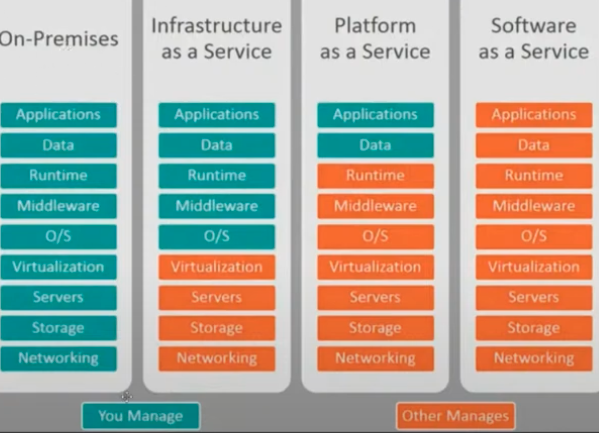

Quando estivermos falando de Deploy provavelmente no início da carreira ou primeiramente iremos aprender a realizar deploy de forma simples, em serviços "gratuitos" na internet, porém conforme as coisas forem avançando será necessárioe studarmos recursos mais robustos como aws, azure, google. Mas de início, começaremos vendo formas rápidas e fáceis de hospedarmos gratuitamente nossas aplicações NodeJS junto c/ seu banco. Vale a pena lembrar que deploys gratuitos sempre vem com algum "porém", e sempre que precisarmos subir o banco junto os recursos passam a ser extremamente limitados. A primeira opção que começaremos a ver, serão o Render , temos o Fly.IO, o Vercel . A verdade é que a maioria dessas plataformas nos permitem realizar o deploy de uma forma "rápida" porém com certas limitações. Porém cairão muito bem quando não temos conhecimento nos servicos avancados citados acima e tambem quando nao queremos rodar nossa aplicacao para "producao" em si, e sim para ver se o projeto está funcionando ou também para Portifólio.
Render: Link Aula
Vercel: Link da Aula
O que é a computação em nuvem ? Computação em nuvem nada mais é do que o fornecimento de recursos computacionais de maneira remota públicas na internet. Basicamente deixamos de adquirir os hardwares e iremos pagar de acordo com o uso. Funciona como uma espécie de taxímetro, a partir da cloud nós não precisamos estipular o quanto iremos usar para poder comprar, e temos recursos "infinitos" em nuvem na qual podemos ir usando e pagamos conforme formos utilizando. Dito isto fica uma pergunta, quem cuida desses recursos "remotos" que iremos consumir ? Temos os três principais provedores de recursos: AWS, AZURE, CGP. Vale ressaltar que uma grande vantagem é que contratamos por demanda. Pagamos pelo que é utilizado. Outra grande vantagem, é que antigamente precisávamos de máquinas físicas (servidores), e muitas vezes esses servidores demorariam semanas ou até meses para que ele chegue e só assim a aplicacao poderia ser colocada em modo de producao. Já com a cloud, em questao de poucos minutos o seu "servidor" já estará online e pronto para ser utilizado.
Quando falamos em computacao em nuvem, executar aplicacoes em cloud, precisamos também entender exatamente os tipos de servicos que o cloud provider oferece. Nos dias de hoje possuimos diversos tipos de servicos para que possamos "otimizar".
O ON-PREMISES é a infra tradicional onde nós mesmos precisamos gerenciar tudo. Quando falamos em Infra as a Service que é quando criamos uma VM dentro do provider, toda a parte mais "física" já passa a ser responsabilidade do provider (memória, cpu etc), e nossas responsabilidades ficarão apenas em versionar o SO, seguranca, atualizacoes, etc. Normalmente nosso primeiro contato com Cloud é através deste modelo dest Infra As a Service.
Já quando começamos a falar de Platform as a Service (PAAS) o nível de gestão nossa já é muito menor. Por exemplo, quando desenvolvemos uma aplicacao em DOTNET precisamos instalar e configurar uma série de runtime, pacotes, etc. Aqui nesse cenário de PAAS essa preocupacao nao existe mais pois o próprio cloud provider ficará responsável por toda a configuracao. Aqui basicamente nós só precisaremos nos preocuparmos com nossa aplicacao e com os dados da nossa aplicacao.
E quando falamos em Software as a Service aqui basicamente nós nao gerenciamos nada como por exemplo google drive, etc etc.
É importante que entendamos isso para que possamos saber qual o nível de responsábilidade que a equipe/empresa precisará. Quanto mais para a esquerda maior a mão de obra, quanto mais para a direita, menos responsabilidades.
OBS: A partir daqui começaremos a entrar nos conceitos de CLOUD utilizando por padrão os serviços da AWS. Porém vale ressaltar que os pilares são agnósticos ou seja, aqui iremos ver apenas conceitos que podem ser aplicados para Azure e também para Google. .
AWS é a empresa que tem a maior fatia de presença no mercado. E para começar literalmente do início podemos clicar aqui para Criar sua Conta . Assim que executamos o cadastro, iremos percebes que temos TRES tipos de servicos gratuitos, o de testes (novas features que eles mesmos querem que nós testemos), 12 meses gratuitos em alguns servicos, e também uma série de servicos que são sempre gratuitos. Quando comecamos a trabalhar com AWS precisamos nos deparar com alguns pontos importantes, como nossa localizacao ( que será via regioes), entao uma dica é que caso inicialmente seu objetivo seja estudos, coloque norte da virginia pois será consideravelmente mais barato(usest1).
Outra dica que vale bastante a pena se atentar, é que ao criarmos nossa conta teremos o usuário ROOT por padrão, por isso, é uma boa dica criar um novo usuário adm para que possamos seguir as boas práticas. Para criar um novo usuário, utilizamos o serviço de IAM.
DICA: Dentro da amazon podemos criar uma série de grupos, como por exemplo Diretoria, Devs, etc. Também temos o conceito de policy, que podem ser dadas tanto para usuários quanto para grupos. A dica em questão consiste em sempre aplicar a policy vinculadas a um grupo, e em seguida vincule os usuários ao grupo. Dessa forma é MUITO mais fácil de lidarmos com as policys.
O primeiro passo sempre que iremos criar qualquer elemento na aws é montarmos a nossa VPC - Virtual Private Cloud(Funciona em todos os cloud Providers.) Vpc é a nossa rede privada dentro da AWS. É muito comum que ao trabalharmos em ambiente de Cloud tenhamos nossa rede e também nossas sub-redes. Imagine que tenhamos um condomínio, temos sempre o condomínio e seus blocos/Prédios, e dentro de cada bloco tenhamos um apartamento. Quando falamos em redes, a lógica é a mesma. A rede é o condomínio, cada bloco é uma subrede, e cada apartamento é nossa maquina (ec2). Nós podemos organizar essas subredes como bem entendermos como por exemplo criar uma subrede para aplicacoes WEB, outra subrede apenas para DB'S. Também podemos construir regras como por exemplo, somente quem está na rede WEB pode acessar a rede DB. Podemos criar a regra para nossa subrede onde estão o DB não sejam acessadas via WEB, apenas via outra rede. Dessa forma já estaremos criando uma certa "seguranca" em nossa aplicacao. É importante o DEV saber disso, pois muitas vezes podemos estar nos deparando com algum erro e o problema ser a rede. De início, iremos criar uma VPC(Rede) e uma Subrede.
Para Criar uma VPC basta colocarmos seu nome, escolher ipv6 ou ipv4, colocar um não um CIDR BLOCK, e as tags. É uma boa prática colocarmos tags (chave/valor) para que possamos categorizar aquele recurso. Como Projeto - NomeProjeto, etc.
Após a VPC estar criada, basta clicarmos em subnets selecionar a VPC, nomea-la, e vincula-la a sua zona de disponibilidade.
A VPC está ligada a regiao e a subnet está ligada a zona de disponibilidade.. CIDR BLOCK é um conceito de extrema importancia quando estamos trabalhando com rede e subrede. reler estudar.
Após a subnet estar criada, finalmente podemos começar a construir nossas máquinas virtuais, que no caso de estudo, criaremos uma EC2. Começamos a clicar na ec2 clicando em Launch Instance. Configurando seu nome, o sistema opercional, sua instancia de máquina. Outra coisa que precisamos nos atentar é a KeyPair onde teremos nossa chave pública que fica no servidor, e a chave privada que fica conosco. Funcionam igual chave e cadeado, a chave publica é o cadeado, e a chave privada é a chave. Precisamos sempre salvar a chave privada em algum lugar SEGURO pois sem ela não iremos mais conseguir acessar nossa ec2. Em seguiad temos nossas configuracoes de rede, onde iremos selecionaremos a nossa vpc, e a subrede. Também iremos definir se queremos ou não criar um ip público para a máquina. Em seguida podemos criar nossa instancia. Após um determinado tempo nossa primeira EC2 estará funcionando e incializada.
O simples fato de termos